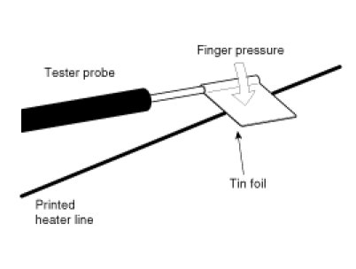
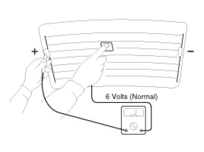
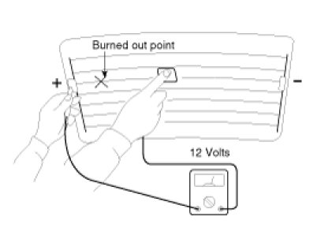
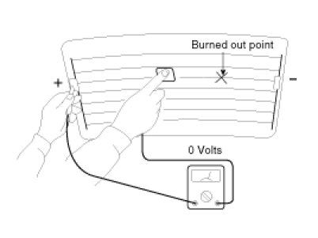
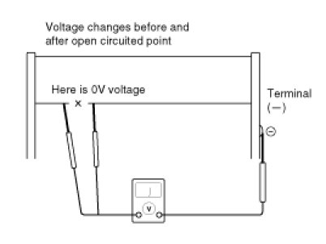
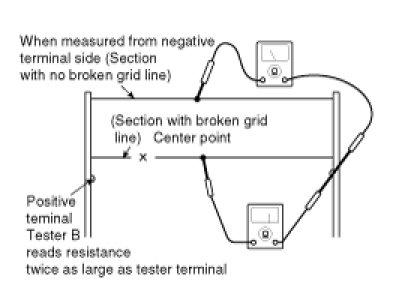
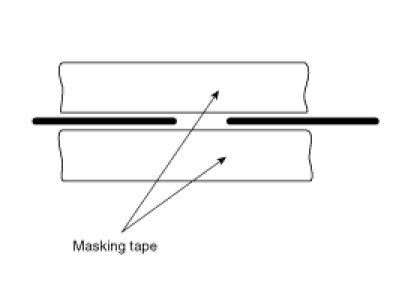

Heated Glass Element: Testing and Inspection
Inspection
CAUTION:
Wrap tin foil around the end of the voltmeter test lead to prevent damaging the heater line. Apply finger pressure on the tin foil, moving the tin foil along the grid line to check for open circuits.

1. Turn on the defogger switch and use a voltmeter to measure the voltage of each heater line at the glass center point. If a voltage of approximately 6V is indicated by the voltmeter, the heater line of the rear window is considered satisfactory.

2. If a heater line is burned out between the center point and (+) terminal, the voltmeter will indicate 12V.

3. If a heater line is burned out between the center point and (-) terminal, the voltmeter will indicate 0V.

4. To check for open circuits, slowly move the test lead in the direction that the open circuit seems to exist. Try to find a point where a voltage is generated or changes to 0V. The point where the voltage has changed is the open-circuit point.

5. Use an ohmmeter to measure the resistance of each heater line between a terminal and the center of a grid line, and between the same terminal and the center of one adjacent heater line. The section with a broken heater line will have a resistance twice as that in other sections. In the affected section, move the test lead to a position where the resistance sharply changes.

Repair Of Broken Heater Line
Prepare the following items:
1. Conductive paint.
2. Paint thinner.
3. Masking tape.
4. Silicone remover.
5. Using a thin brush:
Wipe the glass adjacent to the broken heater line, clean with silicone remover and attach the masking tape as shown. Shake the conductive paint container well, and apply three coats with a brush at intervals of about 15 minutes apart. Remove the tape and allow sufficient time for drying before applying power. For a better finish, scrape away excess deposits with a knife after the paint has completely dried. (Allow 24 hours).
